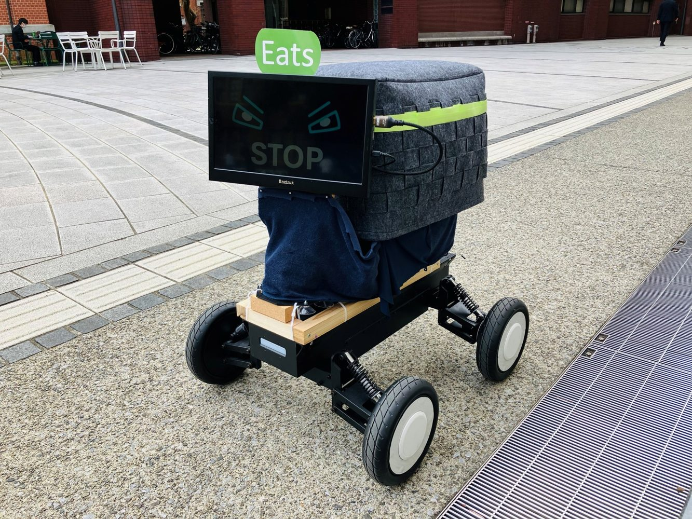
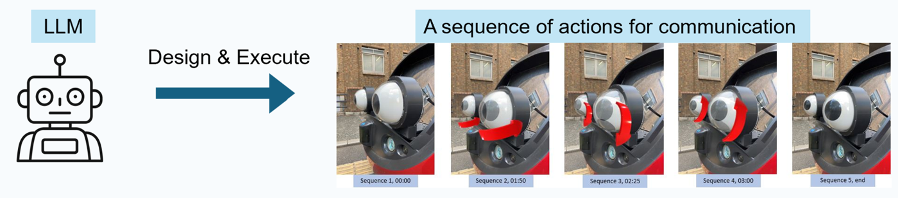

IMWUT 2026 RESEARCH PROJECT
Exploring LLMs for Generating Communicational Actions of External Interfaces on Autonomous Vehicles
Proceedings of the ACM on Interactive, Mobile, Wearable and Ubiquitous Technologies

LANGUAGE MODEL. PHYSICAL ACTION.Can a language model design how an autonomous vehicle communicates with people?
An exploration of LLM-generated eHMI actions.
01 / RESEARCH
Abstract
Research summaryExternal human-machine interfaces (eHMIs) help autonomous vehicles communicate with people around them. Conventional designs rely on manually specified actions for predefined situations. This research investigates whether large language models can turn intended messages into expressive eHMI actions.
We developed a prompt framework and a physical pipeline that connects generated actions to an eHMI prototype. A field study with 26 participants compared human-designed actions with actions generated by GPT-o3-mini, assessing both message interpretation and pedestrian reactions.
The study reveals a distinction between understanding a message and responding correctly. LLM-generated actions achieved comparable message interpretation, but led to more incorrect reactions. The findings highlight differences in human and LLM design priorities and motivate further work on communication that supports appropriate pedestrian responses.
02 / IN MOTION
See the system in action.
From generated instructions to physical expression.
Demonstrations from the research presentation.
Human & LLM designs
Communicating a risk in the pedestrian’s blind spot